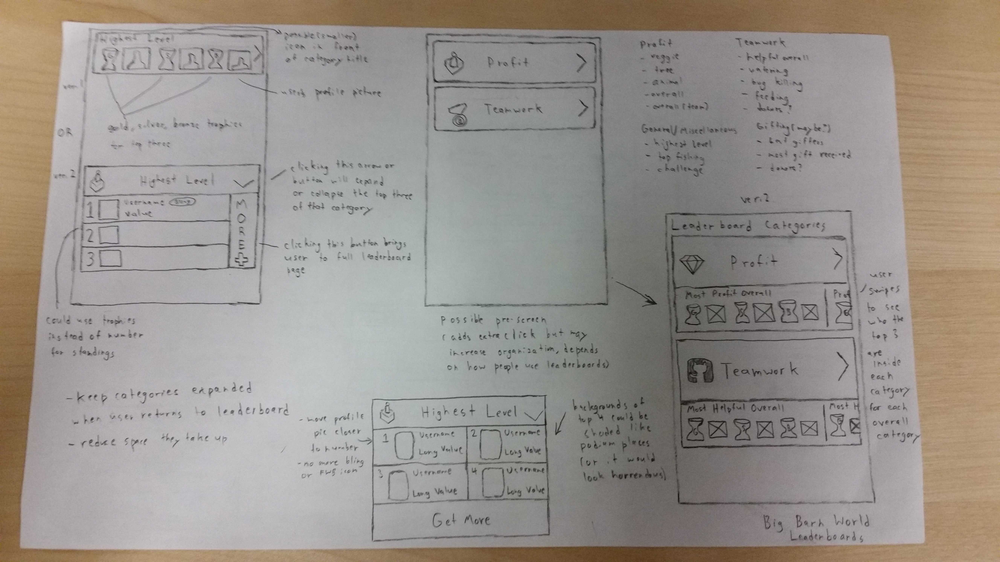
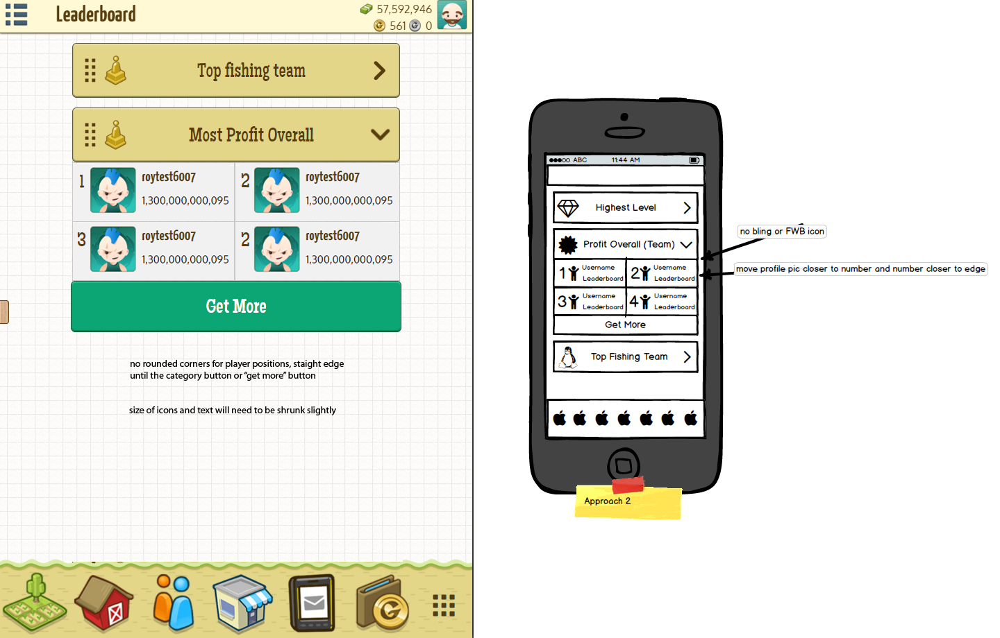

Forlorn is a 2D top down shooter, where the player controls the Havoc Gear; a futuristic mech equipped with the patented “Photon Whip” that lets the player steal enemy weapons.
Roles
Game Designer, Level Designer, Environment and Character Artist, UX Designer, Sound Designer, Producer
Goal
The goal of this project was to simulate the design process of creating a video game over the course of 3 months. Our team had a general interest in creating a sci-fi esque game, and we also wanted to include some sort of robot or mechanized suit that the player controls. After deciding on that, we settled on using the Unity 2D engine, as we wanted to focus on a top-down experience. In the end we hoped to emulate games such as Hotline Miami.


Big Barn World Feature Development
Process - Brainstorming
For this project my team and I started off by brainstorming the mechanics that a mech based, top down, 2D shooter might entail. We realized that we wanted to offer the player a variety of weaponry, but were not sure that we wanted to go with the generic method of having the player pick up the weaponry from the ground or out of containers. Thus, we decided to settle on an idea that would become the core of our gameplay loop; the photon whip. The photon whip would allow the player to steal weapons from all of the enemies the player would face, presenting the player with the opportunity to gain new weapons any time they entered combat.
If an enemies weapon was stolen they would enter a rage state, and would try to self-destruct on the player, bringing a risk along with stealing weapons. The final basic mechanic we decided on at this point was to give the player both a shield and a health attribute. We decided on this because we felt it may be unfaor to the player to take damage while attempting to acquire their first weapon in a combat encounter, and because the enemy weapons were fairly accurate due to their use of hitscan. At this point we had defined our primary and secondary core gameplay loops, as well as our MVP (minimum viable product).
Process - Implementation
Once the mechanics had been generally decided upon, I began to work on the level design and a basic game design document. The GDD outlined the basic principles of how the photon whip should work, and some general ideas of the different weaponry the enemies would have (machine gun, grenade launcher, sniper, etc.) Since the game was a top down 2D shooter, I neeeded to consider placement of protective cover and line of sight carefully, as we wanted to avoid the situation where a player would get attacked by an offscreen enemy as much as possible. I began sketching out some concepts of levels, which would include factors such as enemy spawns, secrets, obstacles/cover, and areas where doors would stop player progress. After completing the sketches, I then began to work on developing the tilesets for each of the maps, as another one of my focuses was doing the environmental pixel art for each level I created. Once an initial level and the basic game mechanics were implemented, we began to test the game, and worked to figure out what worked and what didn't.
Original Game Design Work
Process - Brainstorming
After our initial round of testing, we realized that there were some concerning problems that we had no anticipated. The first of these was that players would use the photon whip constantly to steal weapons from the enemies so that they were never able to even fire them. The issue here was that the player would have no need to worry about ammo, and the enemy rage state was not threatening enough to the player, as the enemies were not fast enough to reach the player before they would be destroyed. I suggested two possible solutions to this: one was to add a cooldown to the photon whip, while the other was to increase the speed of the enemy when they enetered their rage state. We decided on adding the cooldown to the photon whip, as speeding up the enemies rage state would not have targetted the core of the issue, which was the abuse of the photon whip leading to a lack of strategy in the shooting elements of the game.
After thinking on the issue of strategy in the shooting gameplay for a bit, I also proposed a new system for how the weapons and enemies would work, that I hoped would encourage strategy on the players behalf and have them think about when they should or should not use certain weapons. This new system would have the weapons and enemies assigned to three different types (piercing, explosive and energy weapons/enemies), with each weapon type being more effective against certain enemy types as compared to others. With this implementation of a "weapon triangle" I hoped that players would have to think more carefully about which weapons to use based on the enemies in each conbat encounter, and they would have to plan on using the photon whip to steal wepaons accordingly due to its newly implemented cooldown. Allowing the player to carry two weapons at once and to be able to switch between them also helped to further the depth and strategy of the gameplay.
Process - Implementation
The final game featured five complete levels designed and created by me, with a boss fight on the last level that made full use of the photon whip mechanic. The game also featured an upgrade system that made use of the collectible gems that players could find, and a narrative that aimed to connect all of the levels together and tie them into the boss fight. Partway through development we also decided to use the photon whip as a movement mechanic, allowing the player to latch it on to walls and pull themselves towards them. This mechanic was featured heavily in the boss battle, and after final testing and showing off the game, we realized that the movement with the whip actually ended up being one of the most enjoyable parts. If I were to go back and work on the game, I would probably put even more of a focus on the whip, and possibly get rid of or minimize the weapon triangle mechanic, and focus on fights with larger enemies and mobility, similar to Shadow of the Colossus.
Process - Tweaking and Refining
The final game featured five complete levels designed and created by me, with a boss fight on the last level that made full use of the photon whip mechanic. The game also featured an upgrade system that made use of the collectible gems that players could find, and a narrative that aimed to connect all of the levels together and tie them into the boss fight. Partway through development we also decided to use the photon whip as a movement mechanic, allowing the player to latch it on to walls and pull themselves towards them. This mechanic was featured heavily in the boss battle, and after final testing and showing off the game, we realized that the movement with the whip actually ended up being one of the most enjoyable parts. If I were to go back and work on the game, I would probably put even more of a focus on the whip, and possibly get rid of or minimize the weapon triangle mechanic, and focus on fights with larger enemies and mobility, similar to Shadow of the Colossus.
The Result
The final game featured five complete levels designed and created by me, with a boss fight on the last level that made full use of the photon whip mechanic. The game also featured an upgrade system that made use of the collectible gems that players could find, and a narrative that aimed to connect all of the levels together and tie them into the boss fight. Partway through development we also decided to use the photon whip as a movement mechanic, allowing the player to latch it on to walls and pull themselves towards them. This mechanic was featured heavily in the boss battle, and after final testing and showing off the game, we realized that the movement with the whip actually ended up being one of the most enjoyable parts. If I were to go back and work on the game, I would probably put even more of a focus on the whip, and possibly get rid of or minimize the weapon triangle mechanic, and focus on fights with larger enemies and mobility, similar to Shadow of the Colossus.
The Takeaway
The final game featured five complete levels designed and created by me, with a boss fight on the last level that made full use of the photon whip mechanic. The game also featured an upgrade system that made use of the collectible gems that players could find, and a narrative that aimed to connect all of the levels together and tie them into the boss fight. Partway through development we also decided to use the photon whip as a movement mechanic, allowing the player to latch it on to walls and pull themselves towards them. This mechanic was featured heavily in the boss battle, and after final testing and showing off the game, we realized that the movement with the whip actually ended up being one of the most enjoyable parts. If I were to go back and work on the game, I would probably put even more of a focus on the whip, and possibly get rid of or minimize the weapon triangle mechanic, and focus on fights with larger enemies and mobility, similar to Shadow of the Colossus.
Follow Me: